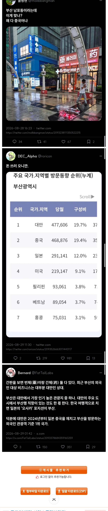

한글도 같이 있고
한자적으면 대만 중국 일본 3개국 커버가능
영어도 있음

한글도 같이 있고
한자적으면 대만 중국 일본 3개국 커버가능
영어도 있음
한국 대만 중국 일본까지 커버하는 간판임
근데 궁금한게, 굳이 약 정도의 글자는 번체로만 써놔도
중국인들도 다 알지 않을까? 실제로 쓰는건 간체를 쓰겠지만,
엄청 어려운 한자도 아니라서 저게 약이라는 말은
아무리 중국사람도 다 알거같아서 둘다 병기할필요 없을 것 같은데.
중국애들 번체 모를덧
모름ㅇㅇ
ㄴㄴ 알아는 봄, 글로 쓰라고 하면 힘들어 함, 그냥 뇌피셜이 아니고 짱.깨 10년 넘게 살다 옴
이게 맞음 중공 애들도 정체자 읽을 수는 있음
내가 제일 좆같은 게 중공 애들 상대로 영업한답시고 여기저기 맹체자 박아놓는 거임
상점이면 몰라 지자체나 나라에서 세운 표시까지
전부 다 아는건 아니여도 일부 단어는 눈치껏 아는게 있는거 같더라
고졸 정도만 되여도 웬만한건 다 알아봄, 간체나 번체가 그냥 단순하게 획을 줄여준게 아니고 규칙이 있음 우리로 치면 자음 모음 처럼 한자 변을 간략하게 쓰는거라서 간략화 된 변만 다 배우면 대부분 한자는 번체도 알아봄, 번체의 言(언)자 변으로 조합되는 語（어）라고 하면 간체의 언자 변은 讠이고 이게 똑같은 '어'로 조합 되면 语(어) 자가 됨, 이런식으로 구분하기 쉬움
부산은 중국애들보다 대만애들 많이온다
한자보고 저지랄하는새끼 지 민증에 한자적힌거 보면 발작하면서 죽을듯 ㅋㅋ
돈쓰러 와준다는데 고맙지 뭐…
해외 다낭 베트남같은데 가면 한국어 천지다 ㅋㅋ..
ㅋㅋㅋ
참고로 일본에도 한국에 간판 존나게 달려있는 곳들 있음.
저게 나쁘게 생각할거 없는게
우리나라 사람도 외국에 한국인 관광객 많은 곳은 한글 써놓은데.
당연한거 아니냐.
사진에 가게 둘 다 약국이네 ㄹㅇ 다이소 - 올리브영 - 약국이 외국인 ㅈㄴ 많이 오는거 맞나보네 ㄷㄷ
한글도 병기했는데
메뉴판 개념이면 뭐 문제있나?
신기한게 화장품가게 직원들 귀신같이 중국인 알아봄
싸이의민족도 조선사람으로 귀신같이 구별하더라 비결을 모르겠음
옷이 이상하게 화려하거나 튀면 십중팔구 중국인이더라
대만사람들 부산 엄청좋아함
신기할정도로 부산이야기 많이하더라
신기하네.. 부산이 좋긴 하지만
서울이랑은 좀 다른맛이 있어서 좋은가봐
걍 한국사람들이 오사카 이야기하는 느낌 아닐까 싶음
가까운 나라 중에도 특히 가까우면서 적절하게 번화한 도시
ㅇㅇ 딱 그런느낌
뭔가 오래된 한국적인 느낌이 서울이랑은 다르게 또 있으니까
그래서 한국여행간다는 애들보면 2회차이상의 경우엔 부산을 많이 말하더라
대만에는 부산 바닷가의 감성을 따라올곳이 없음
부산이 은근히 볼데가 많고 해산물이 대만보다 싸다는 소문이 많이 퍼짐, 대만이 섬나라인데도 해산물 종류도 적고 비싸서 한국와서 해산물 사먹는다고 함, 대만에서 킹크랩 먹을려면 한국돈 30만원 이상 줘야 하는데 부산에선 15만원에서 20만원만 줘도 먹는다더라, 그외 대만 애들이 石斑魚（우럭）요리를 좋아하는데 대만은 이게 고급어종 취급을 해주고 비싸다고 함,
똑같이 바다가 코앞인데
그건 몰랐네
이불 사간다는 말도 꽤 하더라
겨울이불 품질 좋다고
난방도 개뿔 없고 이중창도 잘 안되어있으니 그럴만 하긴해
부산 차원이달라
요즘 핫플마다 저런형태의 약국도 많이 생기던데
k약국도 쇼핑거리임? 한국 약이 유명한가?